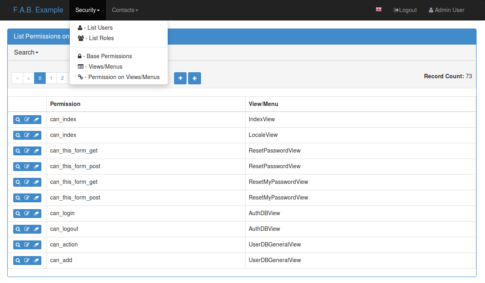

You have four types of authentication methods
| Database: | username and password style that is queried from the database to match. Passwords are kept hashed on the database. |
|---|---|
| Open ID: | Uses the user’s email field to authenticate on Gmail, Yahoo etc... |
| LDAP: | Authentication against an LDAP server, like Microsoft Active Directory. |
| REMOTE_USER: | Reads the REMOTE_USER web server environ var, and verifies if it’s authorized with the framework users table. It’s the web server responsibility to authenticate the user, useful for intranet sites, when the server (Apache, Nginx) is configured to use kerberos, no need for the user to login with username and password on F.A.B. |
| OAUTH: | Authentication using OAUTH (v1 or v2). You need to install flask-oauthlib. |
Configure the authentication type on config.py, take a look at Base Configuration
The session is preserved and encrypted using Flask-Login, OpenID requires Flask-OpenID.
Each user has multiple roles, and a role holds permissions on views and menus, so a user has permissions on views and menus.
There are two special roles, you can define their names on the Base Configuration
| Admin Role: | The framework will assign all the existing permission on views and menus to this role, automatically, this role is for authenticated users only. |
|---|---|
| Public Role: | This is a special role for non authenticated users, you can assign all the permissions on views and menus to this role, and everyone will access specific parts of you application. |
Of course you can create any additional role you want and configure them as you like.
Note
User’s with multiple roles is only possible since 1.3.0 version.
The framework automatically creates for you all the possible existing permissions on your views or menus, by “inspecting” your code.
Each time you create a new view based on a model (inherit from ModelView) it will create the following permissions:
These base permissions will be associated to your view, so if you create a view named “MyModelView” you can assign to any role these permissions:
If you extend your view with some exposed method via the @expose decorator and you want to protect it use the @has_access decorator:
class MyModelView(ModelView):
datamodel = SQLAInterdace(Group)
@has_access
@expose('/mymethod/')
def mymethod(self):
# do something
pass
The framework will create the following access based on your method’s name:
You can aggregate some of your method’s on a single permission, this can simplify the security configuration if there is no need for granular permissions on a group of methods, for this use @permission_name decorator.
You can use the @permission_name to override the permission’s name to whatever you like.
Take a look at API Reference
All your permissions and views are added automatically to the backend and associated with the ‘Admin’ role. The same applies to removing them. But, if you change the name of a view or menu, the framework will add the new Views and Menus names to the backend, but will not delete the old ones. It will generate unwanted names on the security models, basically garbage. To clean them, use the security_cleanup method.
Using security_cleanup is not always necessary, but using it after code rework, will guarantee that the permissions, and associated permissions to menus and views are exactly what exists on your app. It will prevent orphaned permission names and associations.
Use the cleanup after you have registered all your views.
appbuilder.add_view(GroupModelView, "List Groups", category="Contacts")
appbuilder.add_view(ContactModelView, "List Contacts", category="Contacts")
appbuilder.add_separator("Contacts")
appbuilder.add_view(ContactChartView, "Contacts Chart", category="Contacts")
appbuilder.add_view(ContactTimeChartView, "Contacts Birth Chart", category="Contacts")
appbuilder.security_cleanup()
You can always use it and everything will be painlessly automatic. But if you use it only when needed (change class name, add security_cleanup to your code, the garbage names are removed, then remove the method) no overhead is added when starting your site.
All user’s creation and modification are audited. On the show detail for each user you can check who created the user and when and who has last changed it.
You can check also, a total login count (successful login), and the last failed logins (these are reset if a successful login occurred).
If your using SQLAlchemy you can mix auditing to your models in a simple way. Mix AuditMixin class to your models:
from flask_appbuilder.models.mixins import AuditMixin
from flask_appbuilder import Model
from sqlalchemy import Column, Integer, String
class Project(AuditMixin, Model):
id = Column(Integer, primary_key=True)
name = Column(String(150), unique=True, nullable=False)
This will add the following columns to your model:
These columns will be automatically updated by the framework upon creation or update of records. So you should exclude them from add and edit form. Using our example you will define our view like this:
class ProjectModelView(ModelView):
datamodel = SQLAInterface(Project)
add_columns = ['name']
edit_columns = ['name']
We are now looking at the authentication methods, and how you can configure them and customize them. The framework as 5 authentication methods and you choose one of them, you configure the method to be used on the config.py (when using the create-app, or following the propused app structure). First the configuration imports the constants for the authentication methods:
from flask_appbuilder.security.manager import AUTH_OID, \
AUTH_REMOTE_USER, \
AUTH_DB, AUTH_LDAP, \
AUTH_OAUTH, \
AUTH_OAUTH
Next you will use the AUTH_TYPE key to choose the type:
AUTH_TYPE = AUTH_DB
Additionally you can customize the name of the builtin roles for Admin and Public accesses:
AUTH_ROLE_ADMIN = 'My Admin Role Name'
AUTH_ROLE_PUBLIC = 'My Public Role Name'
Finally you can allow users to self register (take a look at the following chapters for further detail):
AUTH_USER_REGISTRATION = True
AUTH_USER_REGISTRATION_ROLE = "My Public Role Name"
These settings can apply to all the authentication methods. When you create your first admin user using fabmanager command line, this user will be authenticated using the authentication method defined on your config.py.
The database authentication type is the most simple one, it authenticates users against an username and hashed password field kept on your database.
Administrators can create users with passwords, and users can change their passwords. This is all done using the UI. (You can override and extend the default UI as we’ll see on Your Custom Security)
This authentication method uses Flask-OpenID. All configuration is done on config.py using OPENID_PROVIDERS key, just add or remove from the list the providers you want to enable:
AUTH_TYPE = AUTH_OID
OPENID_PROVIDERS = [
{ 'name': 'Yahoo', 'url': 'https://me.yahoo.com' },
{ 'name': 'AOL', 'url': 'http://openid.aol.com/<username>' },
{ 'name': 'Flickr', 'url': 'http://www.flickr.com/<username>' },
{ 'name': 'MyOpenID', 'url': 'https://www.myopenid.com' }]
Each list entry is a dict with a readable OpenID name and it’s url, if the url needs an username just add it using <username>. The login template for this method will provide a text box for the user to fillout his/her username.
F.A.B. will ask for the ‘email’ from OpenID, and if this email belongs to some user on your application he/she will login successfully.
This method will authenticate the user’s credentials against an LDAP server. Using this method without self user registration is very simple, for MSFT AD just define the LDAP server:
AUTH_TYPE = AUTH_LDAP
AUTH_LDAP_SERVER = "ldap://ldapserver.local"
For OpenLDAP or if you need/want to bind first with a query LDAP user, then using username to search the LDAP server and binding to it (using the user provided password):
AUTH_TYPE = AUTH_LDAP
AUTH_LDAP_SERVER = "ldap://ldapserver.local"
AUTH_LDAP_SEARCH = "dc=domain,dc=local"
AUTH_LDAP_BIND_USER = "CN=Query User,OU=People,dc=domain,dc=local"
AUTH_LDAP_BIND_PASSWORD = "password"
for MSFT AD you can set the UID from which the search user will be based:
AUTH_LDAP_UID = 'userPrincipalName'
This will use users as: username@domain.local
or:
AUTH_LDAP_UID = 'cn'
This will use users as: username
For OpenLDAP or similar use uid field name:
AUTH_LDAP_UID = 'uid'
By using this method it will be possible to use the provider API, this is because your requesting the user to give permission to your app to access or manage the user’s account on the provider.
So you can send tweets, post on the users facebook, retrieve the user’s linkedin profile etc.
To use OAuth you need to install Flask-OAuthLib. It’s usefull to get to know this library since F.A.B. will expose the remote application object for you to play with.
Take a look at the example to get an idea of a simple use for this.
Use config.py configure OAUTH_PROVIDERS with a list of oauth providers, notice that the remote_app key is just the configuration for flask-oauthlib:
AUTH_TYPE = AUTH_OAUTH
OAUTH_PROVIDERS = [
{'name':'twitter', 'icon':'fa-twitter',
'remote_app': {
'consumer_key':'TWITTER KEY',
'consumer_secret':'TWITTER SECRET',
'base_url':'https://api.twitter.com/1.1/',
'request_token_url':'https://api.twitter.com/oauth/request_token',
'access_token_url':'https://api.twitter.com/oauth/access_token',
'authorize_url':'https://api.twitter.com/oauth/authenticate'}
},
{'name':'google', 'icon':'fa-google', 'token_key':'access_token',
'remote_app': {
'consumer_key':'GOOGLE KEY',
'consumer_secret':'GOOGLE SECRET',
'base_url':'https://www.googleapis.com/plus/v1/',
'request_token_params':{
'scope': 'https://www.googleapis.com/auth/userinfo.email'
},
'request_token_url':None,
'access_token_url':'https://accounts.google.com/o/oauth2/token',
'authorize_url':'https://accounts.google.com/o/oauth2/auth'}
}
]
This needs a small explanation, you basically have five special keys:
| name: | The name of the provider, you can choose whatever you want. But the framework as some builtin logic to retrieve information about a user that you can make use of if you choose: ‘twitter’, ‘google’, ‘github’,’linkedin’. |
|---|---|
| icon: | The font-awesome icon for this provider. |
| token_key: | The token key name that this provider uses, google and github uses ‘access_token’, twitter uses ‘oauth_token’ and thats the default. |
| token_secret: | The token secret key name, default is ‘oauth_token_secret’ |
After the user authenticates and grants access permissions to your application the framework retrieves information about the user, username and email. This info will be checked with the internal user (user record on User Model), first by username next by email.
To override/customize the user information retrieval from oauth, you can create your own method like this:
@appbuilder.sm.oauth_user_info_getter
def my_user_info_getter(sm, provider, response=None):
if provider == 'github':
me = sm.oauth_remotes[provider].get('user')
return {'username': me.data.get('login')}
else:
return {}
Decorate your method with the SecurityManager oauth_user_info_getter decorator. Make your method accept the exact parameters as on this example, and then return a dictionary with the retrieved user information. The dictionary keys must have the same column names as the User Model. Your method will be called after the user authorizes your application on the OAuth provider, and it will receive the following: sm is F.A.B’s SecurityManager class, provider is a string with the name you configured this provider with, response is the response.
Take a look at the example
If you want to alter the security views, or authentication methods since (1.0.1) you can do it in a simple way. The AppBuilder has a new optional initialization parameter where you pass your own custom SecurityManager If you want to add, for example, actions to the list of users you can do it in a simple way.
First i advise you to create security.py and add the following to it:
from flask import redirect
from flask_appbuilder.security.views import UserDBModelView
from flask_appbuilder.security.sqla.manager import SecurityManager
from flask.ext.appbuilder.actions import action
class MyUserDBView(UserDBModelView):
@action("muldelete", "Delete", "Delete all Really?", "fa-rocket", single=False)
def muldelete(self, items):
self.datamodel.delete_all(items)
self.update_redirect()
return redirect(self.get_redirect())
class MySecurityManager(SecurityManager):
userdbmodelview = MyUserDBView
Then on the __init__.py initialize AppBuilder with you own security class:
appbuilder = AppBuilder(app, db.session, security_manager_class=MySecurityManager)
F.A.B. uses a different user view for each authentication method
You can extend or create from scratch your own, and then tell F.A.B. to use them instead, by overriding their correspondent lower case properties on SecurityManager (just like on the given example).
Take a look and run the example on Employees example
Study the source code of BaseSecurityManager
If you want to extend the User Model with extra columns specific to your application (since 1.3.0) you can easily do it. Use the same type of approach as explained earlier.
First extend the User Model (create a sec_models.py file):
from flask_appbuilder.security.sqla.models import User
from sqlalchemy import Column, Integer, ForeignKey, String, Sequence, Table
from sqlalchemy.orm import relationship, backref
from flask_appbuilder import Model
class MyUser(User):
extra = Column(String(256))
Next define a new User view, just like the default User view but with the extra column (create a sec_view.py) If your using:
from flask_appbuilder.security.views import UserDBModelView
from flask_babelpkg import lazy_gettext
class MyUserDBModelView(UserDBModelView):
"""
View that add DB specifics to User view.
Override to implement your own custom view.
Then override userdbmodelview property on SecurityManager
"""
show_fieldsets = [
(lazy_gettext('User info'),
{'fields': ['username', 'active', 'roles', 'login_count', 'extra']}),
(lazy_gettext('Personal Info'),
{'fields': ['first_name', 'last_name', 'email'], 'expanded': True}),
(lazy_gettext('Audit Info'),
{'fields': ['last_login', 'fail_login_count', 'created_on',
'created_by', 'changed_on', 'changed_by'], 'expanded': False}),
]
user_show_fieldsets = [
(lazy_gettext('User info'),
{'fields': ['username', 'active', 'roles', 'login_count', 'extra']}),
(lazy_gettext('Personal Info'),
{'fields': ['first_name', 'last_name', 'email'], 'expanded': True}),
]
add_columns = ['first_name', 'last_name', 'username', 'active', 'email', 'roles', 'extra', 'password', 'conf_password']
list_columns = ['first_name', 'last_name', 'username', 'email', 'active', 'roles']
edit_columns = ['first_name', 'last_name', 'username', 'active', 'email', 'roles', 'extra']
Next create your own SecurityManager class, overriding your model and view for User (create a sec.py):
from flask_appbuilder.security.sqla.manager import SecurityManager
from .sec_models import MyUser
from .sec_views import MyUserDBModelView
class MySecurityManager(SecurityManager):
user_model = MyUser
userdbmodelview = MyUserDBModelView
Note that this is for AUTH_DB, so if your using:
Finally (as shown on the previous example) tell F.A.B. to use your SecurityManager class, so when initializing AppBuilder (on __init__.py):
from flask import Flask
from flask.ext.appbuilder import SQLA, AppBuilder
from flask.ext.appbuilder.menu import Menu
from .sec import MySecurityManager
app = Flask(__name__)
app.config.from_object('config')
db = SQLA(app)
appbuilder = AppBuilder(app, db.session, menu=Menu(reverse=False), security_manager_class=MySecurityManager)
from app import views
Now you’ll have your extended User model as the authenticated user, g.user will have your model with the extra col.
Some images:
{kind=link}